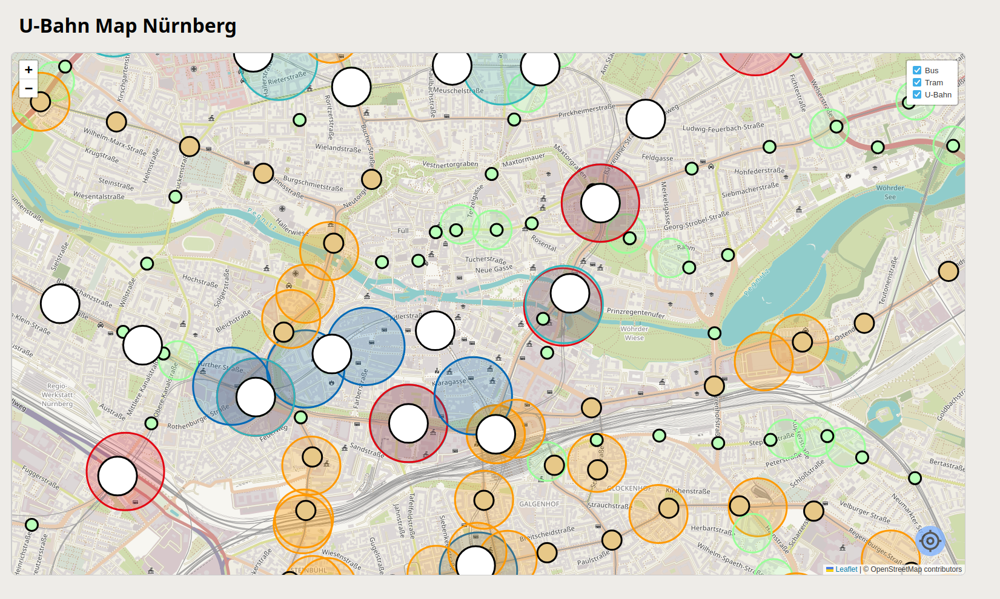
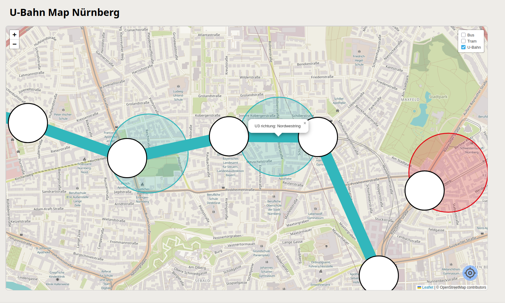

Transmap is a project to show all the public transport in Nürnberg. It originally began, because i was curious how many subway trains there are driving around Nürnberg at a time. I got some inspiration from a different project i found on reddit. Thats also where i found out about the public VAG API.
All the data i'm using is coming from the public API directly from VAG. It is not very well documented, but there is a swagger at least listing (probably?) all the endpoints. Unfortunatly for me and the VAG Server, the whole API is build with usecases like getting departures from a station or looking at the path of one journey, and not showing all the journeys of all busses, trams and subways at once and in real time, updating it every minute
that means that instead of one or maybe a few calls, we need to make closer to hundreds to maybe over 1000, again every minute.
The frontend is uses leaflet to display all the information